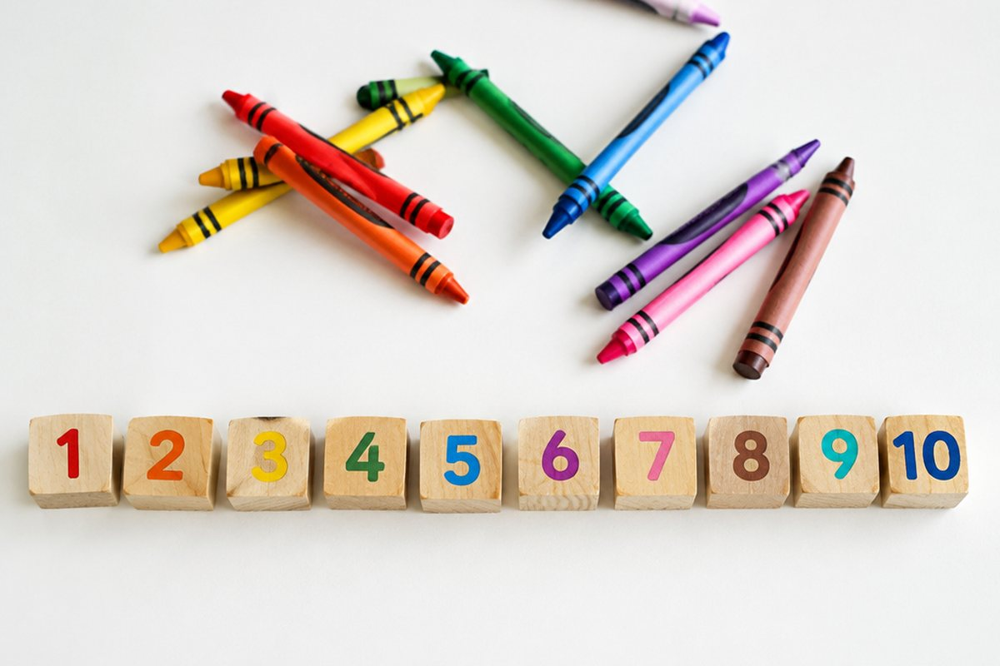

전체 단원 › 3학년 1학기 › 영어 › 색깔과 수
무지개 색깔과 숫자를 영어로 세어 볼까?

크레파스 상자에는 여러 가지 색이 있고, 사탕 봉지에는 사탕이 여러 개 있죠? 색깔과 수를 영어로 말해 봐요.
여러 가지 색깔
빨강은 red, 노랑은 yellow, 파랑은 blue, 초록은 green이에요.
주황은 orange, 보라는 purple, 분홍은 pink, 검정은 black, 하양은 white예요.
The apple is red. (사과는 빨간색이야.)
색깔을 묻고 답하기
색깔을 물을 때는 "What color is it?(그것은 무슨 색이야?)"라고 해요.
대답은 "It's blue.(파란색이야.)"처럼 It's 뒤에 색깔을 붙여요.
What color is it? - It's yellow.
1부터 20까지 세기
one(1), two(2), three(3), four(4), five(5), six(6), seven(7), eight(8), nine(9), ten(10)이에요.
11은 eleven, 12는 twelve, 13부터 19까지는 thirteen, fourteen처럼 뒤에 -teen이 붙어요. 20은 twenty예요.
eleven(11), twelve(12), thirteen(13) … nineteen(19), twenty(20)
몇 개인지 묻고 답하기
개수를 물을 때는 "How many apples?(사과가 몇 개야?)"라고 해요. 둘 이상일 때는 apples처럼 낱말 끝에 s를 붙여요.
대답은 "Three apples.(사과 세 개.)"처럼 숫자를 먼저 말해요.
How many balls? - Five balls.
핵심 낱말
- color
- 색깔
- red / blue / yellow
- 빨강 / 파랑 / 노랑
- How many
- 몇 개
- -teen
- 13~19를 나타내는 숫자 뒤에 붙는 말
- -s
- 둘 이상일 때 낱말 끝에 붙는 말
꼭 알아야 할 표현
| What color is it? | 그것은 무슨 색이야? | 색깔을 물을 때 |
| It's red. | 빨간색이야. | |
| How many apples? | 사과가 몇 개야? | 개수를 물을 때 |
| Three apples. | 사과 세 개. | |
| I like blue. | 나는 파란색이 좋아. | |
| Let's count! | 같이 세어 보자! |
한 줄 정리
- 색깔은 What color is it?으로 묻고 It's ~.로 대답해요.
- 13부터 19까지는 숫자 뒤에 -teen이 붙어요.
- 개수는 How many ~?로 묻고, 둘 이상이면 낱말 끝에 s를 붙여요.
학교 교육과정 연결
- [4영02-04] 실물, 그림, 동작 등을 보고 쉽고 간단한 문장으로 말하거나 단어나 어구를 쓴다.
- [4영02-08] 자기 주변 주제에 관한 담화의 주요 정보를 묻거나 답한다.